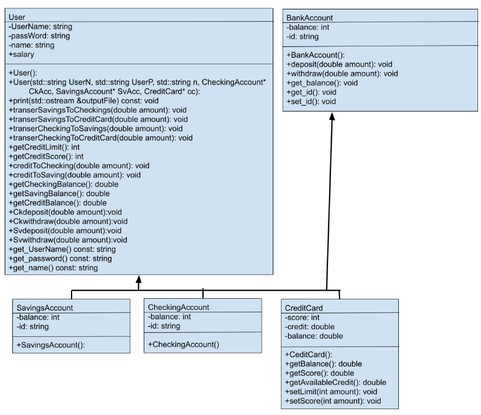

Software Projects
OOP Banking Application in C++
Full ReportIntrodction
This project is an object-oriented programming (OOP) simulation of a banking application developed in C++. It features a comprehensive banking system that includes a secure login page and multiple accounts under a single user profile, such as checking, savings, and credit card accounts. The application operates within a terminal environment, but its interface is designed to be user-friendly and easy to navigate.
Software Functionality
Upon successful login, users can access the main menu, which allows them to navigate to their checking, savings, or credit card account menus. Each account type has its specific functionalities: the checking account menu offers options for deposits, withdrawals, transfers to savings, and viewing statements; the savings account menu includes deposits, withdrawals, and transfers to checking; and the credit card menu allows users to pay off the card, transfer funds to checking or savings (with a 2% fee), view their credit score, and view statements.
The program incorporates various classes, including User, BankAccount, CheckingAccount, SavingsAccount, and CreditCard. The base class BankAccount is extended by the other account classes to include common functionalities such as deposits, withdrawals, and transfers. User data is read from files, and functions are provided to handle the account operations efficiently.
UML Diagram
Conclusion
Extensive testing was conducted to ensure the robustness of the application. This included validating user inputs, checking for negative values, and ensuring that error messages were displayed appropriately. The security of the login system was also tested to confirm it was case-sensitive and handled incorrect credentials effectively. The project demonstrates a solid understanding of OOP principles and effective implementation of a complex system within a terminal-based interface.